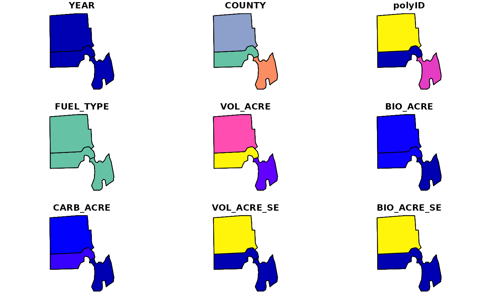
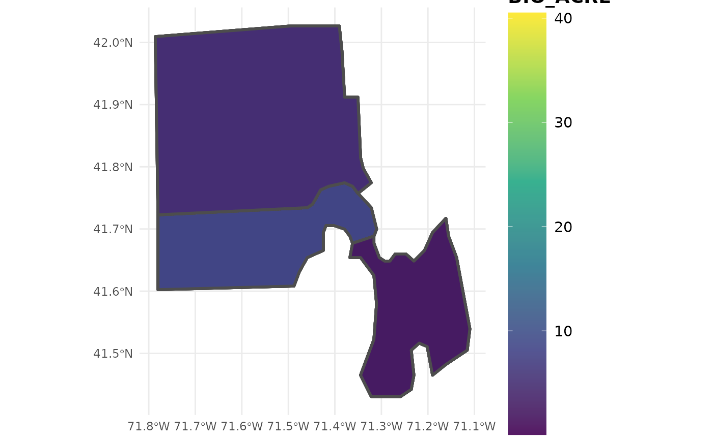

Estimate volume, biomass, and carbon stocks of down woody material (fuels) from FIADB
dwm.RdProduces estimates of down woody material stocks on a per acre basis from the Forest Inventory and Analysis Database (FIADB), along with population totals for each variable. Estimates can be returned by fuel class (duff, litter, 1HR, 10HR, 100HR, 1000HR, piles) for application in fuels management. Estimates can be produced for regions defined within the FIA Database (e.g. counties), at the plot level, or within user-defined areal units. If multiple reporting years (EVALIDs) are included in the data, estimates will be output as a time series. If multiple states are represented by the data, estimates will be output for the full region (all area combined), unless specified otherwise (e.g. grpBy = STATECD).
Usage
dwm(db, grpBy = NULL, polys = NULL, returnSpatial = FALSE, landType = 'forest',
method = 'TI', lambda = 0.5, areaDomain = NULL, totals = FALSE,
byPlot = FALSE, condList = FALSE, byFuelType = TRUE, nCores = 1)Arguments
- db
FIA.DatabaseorRemote.FIA.Databaseobject produced fromreadFIAorgetFIA. If aRemote.FIA.Database, data will be read in and processed state-by-state to conserve RAM (see details for an example).- grpBy
variables from PLOT, PLOTGEOM, or COND tables to group estimates by (NOT quoted). Multiple grouping variables should be combined with
c(), and grouping will occur heirarchically. For example, to produce seperate estimates for each ownership group within methods of stand regeneration, specifyc(STDORGCD, OWNGRPCD).- polys
sporsfPolygon/MultiPolgyon object; Areal units to bin data for estimation. Separate estimates will be produced for region encompassed by each areal unit. FIA plot locations will be reprojected to match projection ofpolysobject.- returnSpatial
logical; if TRUE, merge population estimates with
polysand return assfmultipolygon object. WhenbyPlot = TRUE, return plot-level estimates assfspatial points.- landType
character ("forest" or "timber"); Type of land that estimates will be produced for. Timberland is a subset of forestland (default) which has high site potential and non-reserve status (see details).
- method
character; design-based estimator to use. One of: "TI" (temporally indifferent, default), "annual" (annual), "SMA" (simple moving average), "LMA" (linear moving average), or "EMA" (exponential moving average). See Stanke et al 2020 for a complete description of these estimators.
- lambda
numeric (0,1); if
method = 'EMA', the decay parameter used to define weighting scheme for annual panels. Low values place higher weight on more recent panels, and vice versa. Specify a vector of values to compute estimates using mulitple wieghting schemes, and useplotFIAwithgrpset tolambdato produce moving average ribbon plots. See Stanke et al 2020 for examples.- areaDomain
Logical predicates defined in terms of the variables in PLOT and/or COND tables. Used to define the area for which estimates will be produced (e.g. within 1 mile of improved road:
RDDISTCD %in% c(1:6), Hard maple/basswood forest type:FORTYPCD == 805. Multiple conditions are combined with&(and) or|(or). Only plots within areas where the condition evaluates to TRUE are used in producing estimates. Should NOT be quoted.- totals
logical; if TRUE, return total population estimates (e.g. total area) along with ratio estimates (e.g. mean trees per acre).
- byPlot
logical; if TRUE, returns estimates for individual plot locations instead of population estimates.
- condList
logical; if TRUE, returns condition-level summaries intended for subsequent use with
customPSE.- byFuelType
logical; if TRUE, returns estimates grouped by fuel type (e.g., 1HR, 10HR, 100HR, 1000HR fuels).
- nCores
numeric; number of cores to use for parallel implementation. Check available cores using
detectCores. Default = 1, serial processing.
Details
Estimation Details
Estimation of forest variables follows the procedures documented in Bechtold and Patterson (2005) and Stanke et al 2020. Specifically, per acre estimates are computed using a sample-based ratio-of-means estimator of total volume (biomass or carbon) / total land area within the domain of interest.
As defined by FIA, down woody material includes dead organic materials (resulting from plant mortality and leaf turnover) and fuel complexes of live shrubs and herbs. To maintain relevance for forest fuels management, we by default report estimates grouped by fuel lag-time classes. Specifically, we report estimates for 1HR fuels (small, fine woody debris), 10HR fuels (medium, fine woody debris), 100HR fuels (large, fine woody debris), 1000HR fuels (coarse woody debris), and slash piles, in addition to duff (O horizon; all unidentifiable organic material above mineral soil, beneath litter) and litter (identifiable plant material which is downed and smaller than 10HR fuel class (1HR class includes standing herbaceous material). See Woodall and Monleon (2007) for definitions of fuel lag-time classes and for details on sampling and estimation procedures.
Users may specify alternatives to the 'Temporally Indifferent' estimator using the method argument. Alternative design-based estimators include the annual estimator ("ANNUAL"; annual panels, or estimates from plots measured in the same year), simple moving average ("SMA"; combines annual panels with equal weight), linear moving average ("LMA"; combine annual panels with weights that decay linearly with time since measurement), and exponential moving average ("EMA"; combine annual panels with weights that decay exponentially with time since measurement). The "best" estimator depends entirely on user-objectives, see Stanke et al 2020 for a complete description of these estimators and tradeoffs between precision and temporal specificity.
When byPlot = FALSE (i.e., population estimates are returned), the "YEAR" column in the resulting dataframe indicates the final year of the inventory cycle that estimates are produced for. For example, an estimate of current forest area (e.g., 2018) may draw on data collected from 2008-2018, and "YEAR" will be listed as 2018 (consistent with EVALIDator). However, when byPlot = TRUE (i.e., plot-level estimates returned), the "YEAR" column denotes the year that each plot was measured (MEASYEAR), which may differ slightly from its associated inventory year (INVYR).
Stratified random sampling techniques are most often employed to compute estimates in recent inventories, although double sampling and simple random sampling may be employed for early inventories. Estimates are adjusted for non-response bias by assuming attributes of non-response plot locations to be equal to the mean of other plots included within thier respective stratum or population.
Working with "Big Data"
If FIA data are too large to hold in memory (e.g., R throws the "cannot allocate vector of size ..." errors), use larger-than-RAM options. See documentation of link{readFIA} for examples of how to set up a Remote.FIA.Database. As a reference, we have used rFIA's larger-than-RAM methods to estimate forest variables using the entire FIA Database (~50GB) on a standard desktop computer with 16GB of RAM. Check out our website for more details and examples.
Easy, efficient parallelization is implemented with the parallel package. Users must only specify the nCores argument with a value greater than 1 in order to implement parallel processing on their machines. Parallel implementation is achieved using a snow type cluster on any Windows OS, and with multicore forking on any Unix OS (Linux, Mac). Implementing parallel processing may substantially decrease free memory during processing, particularly on Windows OS. Thus, users should be cautious when running in parallel, and consider implementing serial processing for this task if computational resources are limited (nCores = 1).
Definition of forestland
Forest land must have at least 10-percent canopy cover by live tally trees of any size, including land that formerly had such tree cover and that will be naturally or artificially regenerated. Forest land includes transition zones, such as areas between heavily forest and non-forested lands that meet the mimium tree canopy cover and forest areas adjacent to urban and built-up lands. The minimum area for classification of forest land is 1 acre in size and 120 feet wide measured stem-to-stem from the outer-most edge. Roadside, streamside, and shelterbelt strips of trees must have a width of at least 120 feet and continuous length of at least 363 feet to qualify as forest land. Tree-covered areas in agricultural production settings, such as fruit orchards, or tree-covered areas in urban settings, such as city parks, are not considered forest land.
Timber land is a subset of forest land that is producing or is capable of producing crops of industrial wood and not withdrawn from timber utilization by statute or administrative regulation. (Note: Areas qualifying as timberland are capable of producing at least 20 cubic feet per acre per year of industrial wood in natural stands. Currently inaccessible and inoperable areas are NOT included).
Value
Dataframe or sf object (if returnSpatial = TRUE). If byPlot = TRUE, values are returned for each plot (PLOT_STATUS_CD = 1 when forest exists at the plot location). All variables with names ending in SE, represent the estimate of sampling error (%) of the variable.
YEAR: reporting year associated with estimates
FUEL_TYPE: fuel type associated with each row
VOL_ACRE: estimate of mean volume per acre of dwm (cu.ft/acre)
BIO_ACRE: estimate of mean biomass per acre of dwm (short tons/acre)
CARB_ACRE: estimate of mean carbon mass per acre of dwm (short tons/acre)
nPlots_DWM: number of non-zero plots used to compute dwm estimates
nPlots_AREA: number of non-zero plots used to compute area estimates
Note
All percent sampling error estimates (SE) are returned as the "percent coefficient of variation" (standard deviation / mean * 100) for consistency with EVALIDator. To determine the margin of error for confidence intervals, use the following formula, t * (SE * mean / 100), where t is the corresponding t value for your desired level of confidence (e.g., approximately 2 for a 95% confidence interval). To determine the degrees of freedom for the t value, use nPlots_AREA. Alternatively, you can use a normal approximation for the confidence interval. The validity of the normal approximation decreases as the sample size decreases.
References
rFIA website: https://doserlab.com/files/rfia/
FIA Database User Guide: https://research.fs.usda.gov/understory/forest-inventory-and-analysis-database-user-guide-nfi
Bechtold, W.A.; Patterson, P.L., eds. 2005. The Enhanced Forest Inventory and Analysis Program - National Sampling Design and Estimation Procedures. Gen. Tech. Rep. SRS - 80. Asheville, NC: U.S. Department of Agriculture, Forest Service, Southern Research Station. 85 p. https://research.fs.usda.gov/download/treesearch/20371.pdf
Stanke, H., Finley, A. O., Weed, A. S., Walters, B. F., & Domke, G. M. (2020). rFIA: An R package for estimation of forest attributes with the US Forest Inventory and Analysis database. Environmental Modelling & Software, 127, 104664.
Woodall, C.; Monleon, V.J., eds. 2007. Sampling Protocol, Estimation, and Analysis Procedures for the Down Woody Materials Indicator of the FIA Program. Gen. Tech. Rep. NRS - 22. ewtown Square, PA: U.S. Department of Agriculture, Forest Service, Northern Research Station. https://research.fs.usda.gov/treesearch/13615
Examples
# Load data from rFIA package
data(fiaRI)
data(countiesRI)
# Most recents subset
fiaRI_mr <- clipFIA(fiaRI)
# Most recent estimates
dwm(fiaRI_mr)
#> # A tibble: 6 × 10
#> YEAR FUEL_TYPE VOL_ACRE BIO_ACRE CARB_ACRE VOL_ACRE_SE BIO_ACRE_SE
#> <dbl> <chr> <dbl> <dbl> <dbl> <dbl> <dbl>
#> 1 2018 DUFF 0 18.2 9.09 NaN 31.9
#> 2 2018 LITTER 0 11.6 5.80 NaN 20.4
#> 3 2018 1HR 6.44 0.0829 0.0414 14.8 14.4
#> 4 2018 10HR 33.9 0.415 0.208 29.0 26.3
#> 5 2018 100HR 96.8 1.27 0.633 32.3 32.0
#> 6 2018 1000HR 673. 5.84 2.93 35.4 37.5
#> # ℹ 3 more variables: CARB_ACRE_SE <dbl>, nPlots_DWM <int>, nPlots_AREA <int>
# \donttest{
# Same as above at the plot-level
# Most recent estimates
dwm(fiaRI_mr, byPlot = TRUE)
#> # A tibble: 42 × 8
#> YEAR pltID PLT_CN FUEL_TYPE VOL_ACRE BIO_ACRE CARB_ACRE PROP_FOREST
#> <int> <chr> <dbl> <chr> <dbl> <dbl> <dbl> <dbl>
#> 1 2013 1_44_7_169 1.45e13 DUFF NA 15.6 7.79 1
#> 2 2013 1_44_7_169 1.45e13 LITTER NA 14.7 7.35 1
#> 3 2013 1_44_7_169 1.45e13 1HR 8.47 0.0789 0.0395 1
#> 4 2013 1_44_7_169 1.45e13 10HR 60.8 0.567 0.283 1
#> 5 2013 1_44_7_169 1.45e13 100HR 54.3 0.506 0.253 1
#> 6 2013 1_44_7_169 1.45e13 1000HR 1625. 15.2 7.71 1
#> 7 2013 1_44_7_169 1.45e13 PILE 0 0 0 1
#> 8 2014 1_44_7_254 1.68e14 DUFF NA 2.09 1.04 0.931
#> 9 2014 1_44_7_254 1.68e14 LITTER NA 4.87 2.43 0.931
#> 10 2014 1_44_7_254 1.68e14 1HR 8.23 0.125 0.0623 0.931
#> # ℹ 32 more rows
# Estimates of all forestland, over time
dwm(fiaRI)
#> # A tibble: 24 × 10
#> YEAR FUEL_TYPE VOL_ACRE BIO_ACRE CARB_ACRE VOL_ACRE_SE BIO_ACRE_SE
#> <dbl> <chr> <dbl> <dbl> <dbl> <dbl> <dbl>
#> 1 2015 DUFF 0 17.4 8.68 NaN 43.4
#> 2 2015 LITTER 0 11.1 5.57 NaN 22.1
#> 3 2015 1HR 7.22 0.0908 0.0454 12.8 14.2
#> 4 2015 10HR 34.3 0.399 0.199 27.4 18.9
#> 5 2015 100HR 106. 1.36 0.680 35.1 35.5
#> 6 2015 1000HR 763. 6.68 3.35 41.6 43.7
#> 7 2016 DUFF 0 16.5 8.25 NaN 36.7
#> 8 2016 LITTER 0 10.4 5.21 NaN 20.0
#> 9 2016 1HR 6.42 0.0820 0.0410 16.2 15.9
#> 10 2016 10HR 28.8 0.339 0.170 31.5 24.2
#> # ℹ 14 more rows
#> # ℹ 3 more variables: CARB_ACRE_SE <dbl>, nPlots_DWM <int>, nPlots_AREA <int>
# Estimates of all forestland on mesic sites (most recent)
dwm(fiaRI_mr,
areaDomain = PHYSCLCD %in% 21:29)
#> # A tibble: 6 × 10
#> YEAR FUEL_TYPE VOL_ACRE BIO_ACRE CARB_ACRE VOL_ACRE_SE BIO_ACRE_SE
#> <dbl> <chr> <dbl> <dbl> <dbl> <dbl> <dbl>
#> 1 2018 DUFF 0 18.2 9.09 NaN 31.9
#> 2 2018 LITTER 0 11.6 5.80 NaN 20.4
#> 3 2018 1HR 6.44 0.0829 0.0414 14.8 14.4
#> 4 2018 10HR 33.9 0.415 0.208 29.0 26.3
#> 5 2018 100HR 96.8 1.27 0.633 32.3 32.0
#> 6 2018 1000HR 673. 5.84 2.93 35.4 37.5
#> # ℹ 3 more variables: CARB_ACRE_SE <dbl>, nPlots_DWM <int>, nPlots_AREA <int>
# Estimates of all forestland by owner group (most recent subset)
dwm(fiaRI_mr,
grpBy = OWNGRPCD)
#> # A tibble: 12 × 11
#> YEAR OWNGRPCD FUEL_TYPE VOL_ACRE BIO_ACRE CARB_ACRE VOL_ACRE_SE BIO_ACRE_SE
#> <dbl> <int> <chr> <dbl> <dbl> <dbl> <dbl> <dbl>
#> 1 2018 30 DUFF 0 19.4 9.69 NaN 48.5
#> 2 2018 30 LITTER 0 12.0 6.02 NaN 24.2
#> 3 2018 30 1HR 8.23 0.100 0.0502 1.18 12.7
#> 4 2018 30 10HR 39.8 0.443 0.221 26.3 18.9
#> 5 2018 30 100HR 97.7 1.17 0.584 49.6 51.4
#> 6 2018 30 1000HR 931. 8.20 4.12 39.3 41.3
#> 7 2018 40 DUFF 0 16.8 8.38 NaN 33.2
#> 8 2018 40 LITTER 0 11.1 5.55 NaN 33.5
#> 9 2018 40 1HR 4.28 0.0618 0.0309 14.3 13.6
#> 10 2018 40 10HR 26.8 0.382 0.191 56.2 54.9
#> 11 2018 40 100HR 95.8 1.38 0.692 38.1 38.1
#> 12 2018 40 1000HR 364. 3.01 1.51 16.0 19.0
#> # ℹ 3 more variables: CARB_ACRE_SE <dbl>, nPlots_DWM <int>, nPlots_AREA <int>
# Estimates of all forestland by county and return
# return spatial object
dwmSF <- dwm(fiaRI_mr,
polys = countiesRI,
returnSpatial = TRUE)
plot(dwmSF)
#> Warning: plotting the first 9 out of 12 attributes; use max.plot = 12 to plot all

plotFIA(dwmSF, BIO_ACRE) # TOTAL BIOMASS / ACRE (tons)

# }